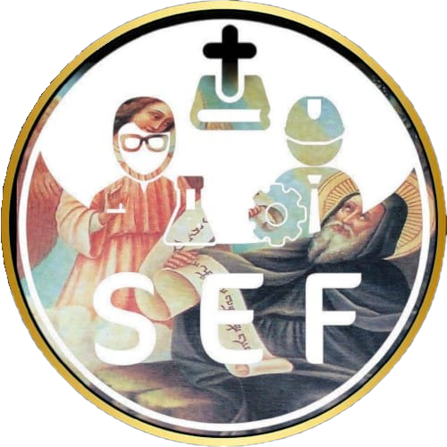

تاريخ الكنيسة القبطية الأرثوذكسية
شاهد، اتعلم، اختبر نفسك، واكتشف حياة آباء وقديسي الكنيسة.

شاهد الفيديو وتابع القصة.
بعد كل فيديو، جاوب على الأسئلة.
بعد إكمال الرحلة، احصل على الـ Comic Book.
تقدّمك حتى الآن